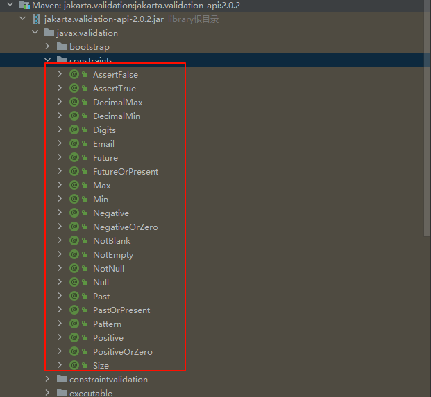
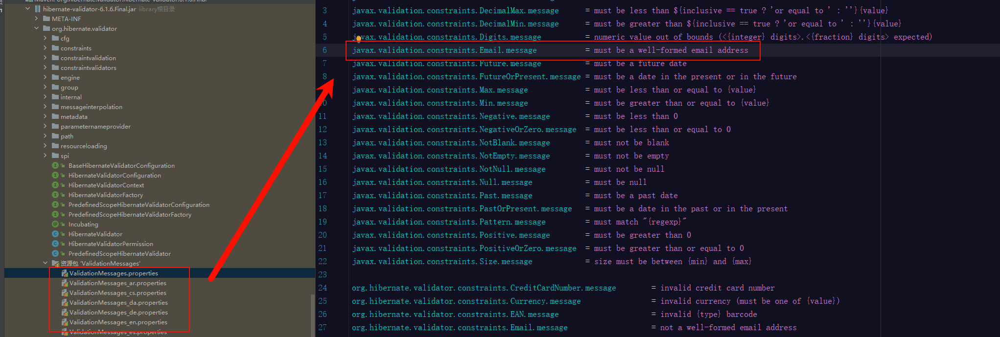
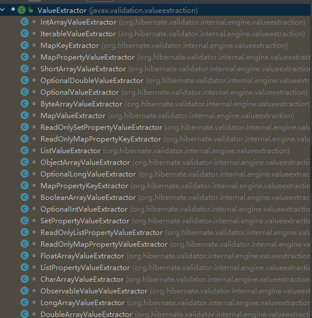
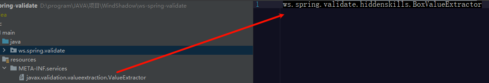
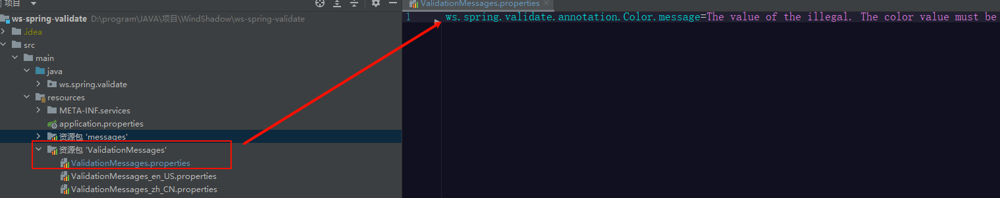

Bean Validation
此篇将全面领略一下JSR-303中提议的Bean Validation特性
Bean Validation是一种规范，为 JavaBean 和方法验证定义了一组元数据模型和 API 规范，而Hibernate Validator 目前来说应该算是最佳实现，Spring框架底层也依赖了Hibernate Validator。
Bean Validation中核心概念之一是：“约束”（constraint），其提供了一系列用于约束JavaBean的属性的注解，
位于javax.validation.constraints包下，使用这些注解和校验器(javax.validation.Validator)，我们可以很好的对JavaBean进行校验。

基本使用
定一个JavaBean
// ... lombok
public class Person {
@Email // 字符串约束为邮箱
private String email;
}
通过校验器校验JavaBean
ValidatorFactory validatorFactory = Validation.buildDefaultValidatorFactory();
Validator validator = validatorFactory.getValidator();
Person person = new Person("123456@xx.com");
Set<ConstraintViolation<Person>> violations = validator.validate(person);
if (!violations.isEmpty()) {
// 有违反约束的属性，可抛出ConstraintViolationException异常
throw new ConstraintViolationException(violations);
}
注：每种约束都有支持的类型，如@Email显然不能约束Integer类型的属性，具体可用访问以文档或源代码注释为准。如果错误使用则将抛出UnexpectedTypeException异常。属性需要有对应的符合JavaBean规范的getter/setter
多重约束
可使用多个注解或重复使用同一注解（前提带有@Repeatable元注解）约束
@Email
@Size(max = 30) // 约束邮箱地址长度最大为30个字符
private String email;
Null值特殊性
通常情况对于JavaBean属性的约束是除了null值以外的，即必须有值才进行约束。如下约束，当email为null时，不进行约束校验。
@Email
private String email;
如果需要约束其值不能为null可使用@NotNull注解。这么设计的目的应该是使每个注解的职责足够单一
值得注意的是，对于字符串约束的注解@NotBlank（javax的注解，hibernate也有一个同名注解但已弃用），源码中已经表示除了约束空白字符串，还会约束null值。
故若要设计自定义的约束注解时，应该也要遵循这个特性。
级联校验
如有JavaBean中还有JavaBean，可通过@Valid触发级联校验
// ... lombok
public class Company {
@NotBlank
private String address;
}
// ... lombok
public class Person {
@Email
private String email;
@Valid // 校验此字段时，继续内校验该JavaBean
private Company company;
}
@Valid可以看作是对JavaBean 的一种约束，即告诉Validation具体约束请进入JavaBean解析
分组校验
指定约束的分组，即在该分组（使用Class作为标识）下，才进行约束
@Email(groups = Group.Insert.class) // 字符串约束为邮箱，在Group.Insert组下
private String email;
校验时指定要校验的组
Set<ConstraintViolation<Person>> violations = validator.validate(person， Group.Insert.class);
可以指定多个组
@Email(groups = {Group.Insert.class, Group.Update.class})
private String email;
其实所有的约束默认分组为javax.validation.groups.Default，校验时不指定分组的情况下，默认使用Default组
分组转换
在级联校验中，如果内部的JavaBean使用了其它分组，可以使用@ConvertGroup注解，通过分组转换，触发其内部的分组校验
// ... lombok
public class Company {
@NotBlank(groups = CompanyGroup.Chain.class)
private String address;
}
// ... lombok
public class Person {
@Email
private String email;
@Valid
// 校验Person的Group.Insert.class组时校验Company内的CompanyGroup.Chain.class组
@ConvertGroup(from = Group.Insert.class, to = CompanyGroup.Chain.class)
// Default默认组也可转为其它组
@ConvertGroup(from = Default.class, to = CompanyGroup.Chain.class)
private Company company;
}
动态默认组策略(hibernate)
在Hibernate Validator中，我们可以通过制定默认组策略，额外提供要校验的组。
实现org.hibernate.validator.spi.group.DefaultGroupSequenceProvider接口提供额外组。
// ... lombok
@GroupSequenceProvider(PotGroup.class)
public class Pot {
private Integer code;
@NotBlank(groups = Group.Query.class)
@Null(groups = Group.Insert.class)
private String id;
@NotBlank
private String color;
}
public class PotGroup implements DefaultGroupSequenceProvider<Pot> {
@Override
public List<Class<?>> getValidationGroups(Pot pot) {
List<Class<?>> groups = new ArrayList<>();
groups.add(Pot.class);
if (pot != null) {
Integer code = pot.getCode();
if (code != null) {
switch (code) {
case 0:
groups.add(Group.Insert.class);
break;
case 1:
groups.add(Group.Query.class);
break;
default:
groups.add(Group.Update.class);
}
}
}
return groups;
}
}
需要注意的是：
- 实现DefaultGroupSequenceProvider接口的getValidationGroups方法时，必须至少返回指定的泛型本身的class
- 此操作是提供额外的组，内置的Default依旧有效 ，如Provider提供了Group.Insert.class，则会校验Default组和Group.Insert.class组
- 只有触发默认组的校验时，才会以Provider提供的组进一步进行对应组的校验
如
Pot pot = new Pot();
pot.setCode(0);
// ... pot other setter
// 不指定分组，触发默认组，code == 0, 进一步校验Group.Insert.class组与Default组，即id和color都会被校验
validator.validate(pot);
// 指定分组，未触发默认组，仅校验Group.Query.class组
validator.validate(pot, Group.Query.class);
需要注意的是，校验组的顺序是根据返回的列表确定的，若途中有一组校验未通过，则后续的组将不会继续校验，且Default组优先级最高
违反约束的提示消息
通过message字段确定消息
@Email(message = "邮箱无效")
private String email;
获取消息
Set<ConstraintViolation<Person>> violations = validator.validate(person);
for (ConstraintViolation<T> violation : violations) {
System.out.println(violation.getMessage()); // 打印消息
}
当然标准场景消息肯定是要支持国际化，在官方约束注解中已经有默认实现，如@Email消息为“{javax.validation.constraints.Email.message}”，
// ...
public @interface Email {
String message() default "{javax.validation.constraints.Email.message}";
// ...
}
在Hibernate Validator实现中提供了国际化消息，即classpath下的ValidationMessages.properties文件

脚本断言(hibernate)
在Hibernate Validator中，提供了脚本约束@ScriptAssert注解，顾名思义，你可以通过脚本来对JavaBean进行更灵活更复杂的校验
@ScriptAssert(script = "_this.id == null || _this.desc != null", alias = "_this", lang = "javascript", message = "{ws.spring.validate.pojo.Phone.message}")
// ...lombok
public class Phone {
private Integer id;
private String desc;
}
上述代码的@ScriptAssert注解中，script部门便是要编写的脚本，语法则是使用lang属性指定的javascript，而alias表示脚本中使用”_this”代表当前JavaBean对象。
需要注意的是，该脚本更像是表达式，其返回的结果必须是布尔值。
为了方便维护及灵活编码，笔者常用实践更多是在JavaBean中提供判定方法，在脚本中调用该方法
如下，提供的方法必须是public的
@ScriptAssert(script = "_this.isValid()", alias = "_this", lang = "javascript", message = "{ws.spring.validate.pojo.Phone.message}")
// ...lombok
public class Phone {
private Integer id;
private String desc;
public boolean isValid() {
// 可进行其它更复杂的逻辑校验
return this.id == null || this.desc != null;
}
}
至于脚本的执行，实际是通过JSR233 引入的脚本引擎javax.script.ScriptEngineManager 来支持的，默认提供了javascript的支持。在java9后ScriptEngineManager 被ServiceLoader 代替。
约束泛型
考虑以下JavaBean，是否可以约束集合内部的字符串为邮箱地址？
// ... lombok
public class Person {
private List<String> emails;
}
实际上我们只要编写成以下形式即可做到约束集合内的值
private List<@Email String> emails;
那么再考虑一种情况，自定义的类型，如果也带了泛型，是否支持约束呢？
// ... lombok
public class Box<T> {
private T entity;
}
是否支持以下约束声明，以约束Box内部的entity为邮箱地址？
// ... lombok
public class Person {
private Box<@Email String> box;
}
很遗憾不支持！
以List之一的ArrayList举例，Bean Validation是怎么知道要校验的是ArrayList内部保存元素的数组，而不是其它如size等字段的呢？很显然背后有一套机制在支持，而我们自定义的类型Box明显是不被识别的，也就不会支持。
这便是提取器javax.validation.valueextraction.ValueExtractor
提取器
Bean Validation能够识别泛型类型并校验器内部的值依靠的正是ValueExtractor提取器。
不仅集合，对数组、Optional对象等进行校验时，Validation会通过ValueExtractor提取真正要进行校验的值。
Hibernate Validator提供了常用集合数组等的提取器

如果要实现上述我们对Box泛型的约束校验，就需要实现它的提取器，其中泛型部分使用@ExtractedValue注明
public class BoxValueExtractor implements ValueExtractor<Box<@ExtractedValue ?>> {
static final String NODE_NAME = "<Box entity>";
public static final ValueExtractorDescriptor DESCRIPTOR = new ValueExtractorDescriptor(new BoxValueExtractor());
@Override
public void extractValues(Box<?> originalValue, ValueReceiver receiver) {
// 实际校验 Box内部的entity
receiver.value(NODE_NAME, originalValue.getEntity());
}
}
提取器通过SPI注册，文件名为META-INF/services/javax.validation.valueextraction.ValueExtractor

方法参数约束
Bean Validation还支持对方法参数和返回值进行约束校验，而非仅限于JavaBean
public class SomeService {
@NotNull
public Integer validateBasic(@NotBlank String str) {
// ...
}
}
使用ExecutableValidator校验
ValidatorFactory validatorFactory = Validation.buildDefaultValidatorFactory();
Validator validator = validatorFactory.getValidator();
// 获取方法参数校验器
ExecutableValidator ev = validator.forExecutables();
SomeService service = new SomeService();
Method method = SomeService.class.getMethod("validateBasic", String.class);
// 校验方法参数
String str = "";
ExecutableValidator ev = validator.forExecutables();
Set<ConstraintViolation<SomeService>> violations1 = ev.validateParameters(service, method, new Object[]{str});
if (!violations1.isEmpty()) {
throw new ConstraintViolationException(violations1);
}
// 校验方法返回值
Integer retuenValue = 1;
Set<ConstraintViolation<SomeService>> violations2 = ev.validateReturnValue(service, method, retuenValue);
if (!violations2.isEmpty()) {
throw new ConstraintViolationException(violations2);
}
需要注意的是，Method需要和给定的service是对应契合的，如果存在继承或实现接口等操作，方法获取不当则抛出ConstraintViolationException异常，通常是因为方法签名与给定的目标对象不匹配。
其它诸如分组校验等操作，在方法约束校验上不再赘述。
方法参数脚本断言(hibernate)
同样Hibernate Validator也提供了，对于方法参数的脚本断言@ParameterScriptAssert。
public class SomeService {
@ParameterScriptAssert(lang = "javascript", script = "a + b == 10")
public void validateBasic(Integer a, Integer b) {
assert Objects.requireNonNull(a) + Objects.requireNonNull(b) == 10;
}
}
值得注意的是，在javascript中 null与数字运算时被当作0，即 null + 5 = 5。所以上述脚本，a = null, b = 10时，验证也会通过。故java方法内需要留意空指针问题
约束扩展
基本扩展
扩展Bean Validation的约束需要通过注解+约束验证器（javax.validation.ConstraintValidator）的形式。
声明一个约束注解，必须使用@Constraint修饰，约束注解必须至少包含message(String)、groups(Class数组)、payload(Class数组)属性
@Retention(RetentionPolicy.RUNTIME)
// 一般我们支持注解可应用在大多数场合，没必要缩小范围
@Target({METHOD, FIELD, ANNOTATION_TYPE, CONSTRUCTOR, PARAMETER, TYPE_USE})
// 指明约束验证器，可以是多个
@Constraint(validatedBy = {ColorConstraintValidator.class})
public @interface Color {
String BLUE = "blue";
String RED = "red";
String YELLOW = "yellow";
String GREEN = "green";
// 国际化消息key，若不支持国际化可使用固定消息如 "颜色取值错误" 等
String message() default "{ws.spring.validate.annotation.Color.message}";
Class<?>[] groups() default {};
Class<? extends Payload>[] payload() default {};
}
实现约束验证器，值得注意的是，验证器在每次验证操作时都会被实例化，也就是说可设计成有状态的
// 表示支持验证Color注解修饰的对象，并支持验证String类型
public class ColorConstraintValidator implements ConstraintValidator<Color, String> {
private static final Set<String> COLORS = Stream.of(Color.BLUE, Color.GREEN, Color.RED, Color.YELLOW).collect(Collectors.toSet());
@Override
public void initialize(Color constraintAnnotation) {
// 初始化操作，这里可以拿到注解内容
}
@Override
public boolean isValid(String value, ConstraintValidatorContext context) {
// 验证操作
return COLORS.contains(value);
}
}
在上述代码中，@Color注解使用的消息我们需要支持国际化，需要按照官方“套路”，在classpath下提供ValidationMessages.properties。

到此扩展完成
组合扩展
如果扩展约束时，只是想把现有的约束整合到一起，可不提供约束验证器
@Retention(RetentionPolicy.RUNTIME)
@Target({METHOD, FIELD, ANNOTATION_TYPE, CONSTRUCTOR, PARAMETER, TYPE_USE})
@Constraint(validatedBy = {})
@Size
@Pattern(regexp = "[a-zA-Z]*")
@ReportAsSingleViolation
public @interface LetterText {
/**
* 覆盖{@link Size#min()}
*/
@OverridesAttribute(constraint = Size.class, name = "min") int min() default 0;
/**
* 覆盖{@link Size#max()}
*/
@OverridesAttribute(constraint = Size.class, name = "max") int max() default 5;
/**
* 使用{@link ReportAsSingleViolation}注解时，表示忽略组合注解的校验结果message消息，使用自身<code>message</code>消息作为最终的校验消息
*
* @return message
*/
String message() default "{ws.spring.validate.annotation.LetterText.message}";
Class<?>[] groups() default {};
Class<? extends Payload>[] payload() default {};
}
上述代码中，@LetterText约束由@Size约束与@Pattern约束组合而成，限制了字符串内容必须为字母，且长度默认为0到5。
使用@OverridesAttribute覆盖（或传递）注解的属性值。
使用@ReportAsSingleViolation注解则表明，校验未通过时，使用的消息以@LetterText的为准，@Size和@Pattern的消息将被忽略，即无论数据违反了@Size还是@Pattern的约束，都使用@LetterText的消息
特殊扩展
在方法参数脚本断言@ParameterScriptAssert中，并不像@Email这样单一校验某个参数，而是涉及了多个参数。
这是Bean Validation比较特殊的一种验证器：跨参数验证器
即跨多个方法参数的验证器
如我们自定义一个@AnyNotNull约束注解，来约束方法参数至少有一个不为null
@Retention(RetentionPolicy.RUNTIME)
// 因为是校验方法参数，所以仅可修饰构造（器）方法或普通方法
@Target({METHOD, CONSTRUCTOR})
@Constraint(validatedBy = AnyNotNullConstraintValidator.class)
public @interface AnyNotNull {
String message() default "{ws.spring.validate.annotation.AnyNotNull.message}";
Class<?>[] groups() default {};
Class<? extends Payload>[] payload() default {};
}
@AnyNotNull的验证器，使用@SupportedValidationTarget + ValidationTarget.PARAMETERS 注明此为跨参数验证器（即指定验证目标为方法参数），跨参数验证器要验证的目标是方法参数，所以必须以Object[]接收（Object也可，但本质还是Object[]）。
@SupportedValidationTarget({ValidationTarget.PARAMETERS})
public class AnyNotNullConstraintValidator implements ConstraintValidator<AnyNotNull, Object[]> {
@Override
public boolean isValid(Object[] value, ConstraintValidatorContext context) {
// 参数至少有一个不为null
for (Object o : value) {
if (o != null) {
return true;
}
}
return false;
}
}
需要注意的是，跨参数验证器约束注解不能作用在无参方法上
注意到ValidationTarget枚举有两种类型（版本：jakarta.validation-api: 2.0.2）
public enum ValidationTarget {
ANNOTATED_ELEMENT,
PARAMETERS
}
当@SupportedValidationTarget 注解内部指定的验证目标为PARAMETERS，说明验证器为跨参数验证器，若为ANNOTATED_ELEMENT，说明验证器是普通的验证器，也就是说此时约束注解验证时是对方法的返回值进行验证，即避免了歧义。
下面讨论更复杂的场景，若我们的验证器想支持上述两种ValidationTarget，消除歧义是必须的。
以@AnyNotNull 为例，再增加对返回值的校验支持，即返回值不可为null。
根据Bean Validation的约定，@AnyNotNull 需要设定额外的属性validationAppliesTo以标识要的验证目标，以消除上述歧义
@Retention(RetentionPolicy.RUNTIME)
@Target({METHOD, CONSTRUCTOR})
@Constraint(validatedBy = AnyNotNullConstraintValidator.class)
public @interface AnyNotNull {
String message() default "{ws.spring.validate.annotation.AnyNotNull.message}";
Class<?>[] groups() default {};
Class<? extends Payload>[] payload() default {};
// 默认值必须是 IMPLICIT
ConstraintTarget validationAppliesTo() default ConstraintTarget.IMPLICIT;
}
验证器需做如下改造，其中通过target保存此次验证的目标，验证目标对象使用Object接收以兼容验证返回值的场景。
@SupportedValidationTarget({ValidationTarget.ANNOTATED_ELEMENT, ValidationTarget.PARAMETERS})
public class AnyNotNullConstraintValidator implements ConstraintValidator<AnyNotNull, Object> {
// 保存要验证的目标
private ConstraintTarget target;
@Override
public void initialize(AnyNotNull constraintAnnotation) {
target = constraintAnnotation.validationAppliesTo();
}
@Override
public boolean isValid(Object value, ConstraintValidatorContext context) {
// 验证返回值
if (target == ConstraintTarget.RETURN_VALUE) {
return value != null;
} else if (target == ConstraintTarget.PARAMETERS) {
// 验证参数
Object[] arr = (Object[])value;
for (Object o : arr) {
if (o != null) {
return true;
}
}
return false;
} else {
throw new IllegalStateException("Unsupported ConstraintTarget");
}
}
}
使用@AnyNotNull约束注解时，则需要指明validationAppliesTo属性为（RETURN_VALUE或PARAMETERS）
@AnyNotNull(validationAppliesTo = ConstraintTarget.RETURN_VALUE)
public String someMethod(String str, Integer size) {
// ...
}
同样的，如果约束注解存在多个验证器，且这些验证器既有普通验证器又有跨参数验证器时，也需要设定validationAppliesTo属性来消除歧义。
到此，Bean Validation介绍完毕，如果想更详细的了解Bean Validation可参考此篇文章：https://blog.csdn.net/qq_43341842/article/details/127560164